library(tsibble)
library(tsibbledata)
library(lubridate)
library(tidyverse)
library(fable)
library(feasts)
library(forecast)
library(fpp2)17 Time series: modeling and forecasting
Prediction is difficult, especially about the future.
— Niels Bohr (apocryphally)
17.1 Goals:
- Use current tools for handling and visualizing time series
- Calculate auto- and cross-correlations of time series
- Decompose time series into components
- Use linear regression methods for fitting and forecasting
17.2 Time series format and plotting
A time series is a special data set where each observation has an associated time measurement. There is a special R structure for storing and operating on time series, called ts, as illustrated here:
births <- scan("http://robjhyndman.com/tsdldata/data/nybirths.dat")
birthstimeseries <- ts(births, frequency = 12, start = c(1946, 1))
birthstimeseries Jan Feb Mar Apr May Jun Jul Aug Sep Oct
1946 26.663 23.598 26.931 24.740 25.806 24.364 24.477 23.901 23.175 23.227
1947 21.439 21.089 23.709 21.669 21.752 20.761 23.479 23.824 23.105 23.110
1948 21.937 20.035 23.590 21.672 22.222 22.123 23.950 23.504 22.238 23.142
1949 21.548 20.000 22.424 20.615 21.761 22.874 24.104 23.748 23.262 22.907
1950 22.604 20.894 24.677 23.673 25.320 23.583 24.671 24.454 24.122 24.252
1951 23.287 23.049 25.076 24.037 24.430 24.667 26.451 25.618 25.014 25.110
1952 23.798 22.270 24.775 22.646 23.988 24.737 26.276 25.816 25.210 25.199
1953 24.364 22.644 25.565 24.062 25.431 24.635 27.009 26.606 26.268 26.462
1954 24.657 23.304 26.982 26.199 27.210 26.122 26.706 26.878 26.152 26.379
1955 24.990 24.239 26.721 23.475 24.767 26.219 28.361 28.599 27.914 27.784
1956 26.217 24.218 27.914 26.975 28.527 27.139 28.982 28.169 28.056 29.136
1957 26.589 24.848 27.543 26.896 28.878 27.390 28.065 28.141 29.048 28.484
1958 27.132 24.924 28.963 26.589 27.931 28.009 29.229 28.759 28.405 27.945
1959 26.076 25.286 27.660 25.951 26.398 25.565 28.865 30.000 29.261 29.012
Nov Dec
1946 21.672 21.870
1947 21.759 22.073
1948 21.059 21.573
1949 21.519 22.025
1950 22.084 22.991
1951 22.964 23.981
1952 23.162 24.707
1953 25.246 25.180
1954 24.712 25.688
1955 25.693 26.881
1956 26.291 26.987
1957 26.634 27.735
1958 25.912 26.619
1959 26.992 27.897This reads in a data set recording the number of births per month in New York City, from 1946 to 1958 (in thousands of births?) To create the time series, we had to give the function the frequency, or the number of time points in a year, and the starting value as a vector assigned to start = c(1946, 1), the first element is the year and the second the month.
There are several other specialized data structures for handling time series. We will use one from a new set of R packages called tidyverts that is called a tsibble. https://tsibble.tidyverts.org/ The tsibbledata package contains several time series data sets and we will load two below: olympic_running, containing the Olympic winning times in different running events, and pelt, containing the classic data of the number of Lynx and Hare pelts sold in Canada in the 19th and early 20th centuries:
data("olympic_running")
glimpse(olympic_running)Rows: 312
Columns: 4
Key: Length, Sex [14]
$ Year <int> 1896, 1900, 1904, 1908, 1912, 1916, 1920, 1924, 1928, 1932, 193…
$ Length <int> 100, 100, 100, 100, 100, 100, 100, 100, 100, 100, 100, 100, 100…
$ Sex <chr> "men", "men", "men", "men", "men", "men", "men", "men", "men", …
$ Time <dbl> 12.00, 11.00, 11.00, 10.80, 10.80, NA, 10.80, 10.60, 10.80, 10.…data("pelt")
glimpse(pelt)Rows: 91
Columns: 3
$ Year <dbl> 1845, 1846, 1847, 1848, 1849, 1850, 1851, 1852, 1853, 1854, 1855,…
$ Hare <dbl> 19580, 19600, 19610, 11990, 28040, 58000, 74600, 75090, 88480, 61…
$ Lynx <dbl> 30090, 45150, 49150, 39520, 21230, 8420, 5560, 5080, 10170, 19600…You can see that tsibbles contain multiple variables, one of which is the time variable and is called the index, and one or more others are denoted as key, which are variables that identify the observations but are not changing in time. For example, in the Olympic times data set, the Sex and the Length are the keys, because they are not measurement that we’re plotting over time. In the pelt data set, there is no key variable (but you could make a longer tsibble with species as the key variable if you wanted.)
17.2.1 Visualizing the data
The most straightforward way of visualizing time series is using a time plot, which can be created using autoplot:
autoplot(birthstimeseries) +
ggtitle("Number of births in NYC") +
ylab("Births (thousands)") +
xlab("Year")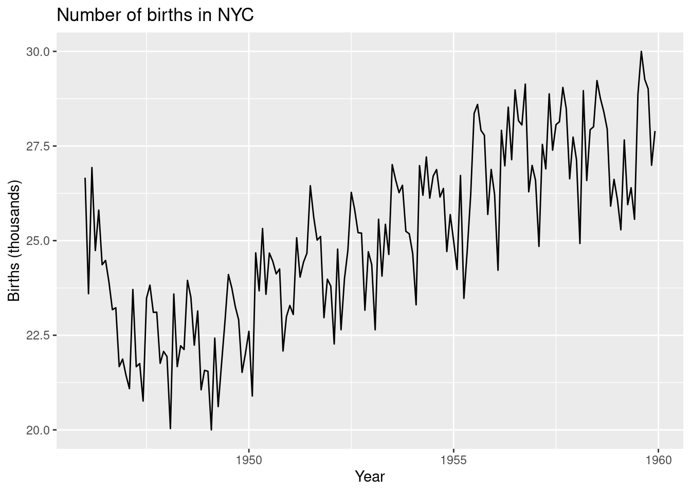
autoplot works best with timeseries objects, so to use it with a tsibble you can convert it to a ts first, like this:
autoplot(as.ts(pelt)) +
ggtitle("Lynx and hare pelts") +
ylab("Number of pelts") +
xlab("Year")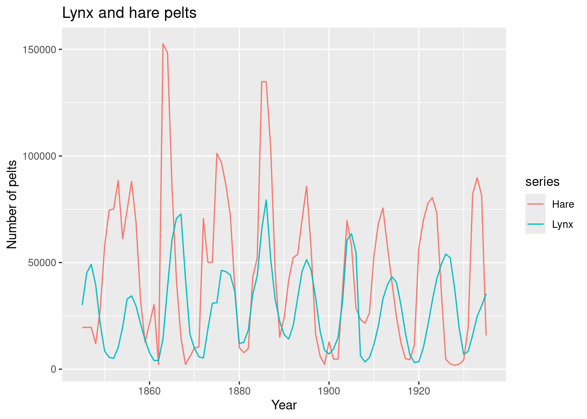
One can also use ggplot directly, for example to plot a faceted graph of the olympic times for different years:
olympic_running %>% as_tibble %>%
ggplot(aes(x=Year, y = Time, colour = Sex)) +
geom_line() +
facet_wrap(~ Length, scales = "free_y")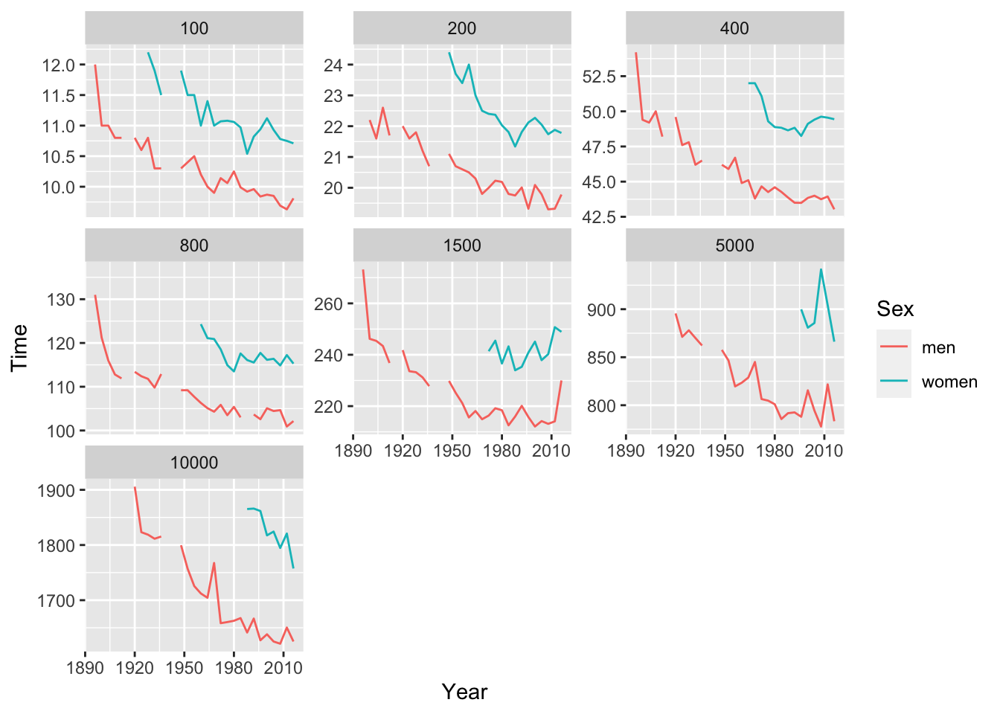
17.3 Decomposition of time series
As you can see from the plots above, time series are often a combination of different time-dependent processes and it is often useful to think about them separately. One can distinguish three types of time variation in time series:
Seasonality A seasonal pattern occurs when a time series is affected by seasonal factors such as the time of the year or the day of the week. Seasonality is always of a fixed and known frequency.
Trend A trend exists when there is a long-term increase or decrease in the data. It does not have to be linear. Sometimes we will refer to a trend as “changing direction”, when it might go from an increasing trend to a decreasing trend.
Cyclic A cycle occurs when the data exhibit rises and falls that are not of a fixed frequency. In economics, these fluctuations may by due to economic conditions and are often related to the “business cycle”.
17.3.1 Decomposition of time series
There are two main types of decompositions of time series: additive and multiplicative. Let us call \(X_t\) the time series data, \(T_t\) the trend (non-periodic component), \(S_t\) the seasonal part (periodic component), and \(R_t\) the remainder.
\[ X_t = T_t + S_t + R_t \] \[ X_t = T_t \times S_t \times R_t \]
One simple way of removing seasonality and estimating the trend is using the moving average, that is using \(k\) points before and \(k\) points after each point to calculate the trend: \[ T_t = \frac{1}{m} \sum_{i=-k}^k X_{t+i} \]
Here \(m\) is called the order of the moving average and is defined as \(m = 2k+1\). There is a useful function ma() that calculates these averages and allows them to be plotted.
m <- 6
s_name <- paste("MA-", m)
autoplot(birthstimeseries, series = "data") +
autolayer(ma(birthstimeseries, m), series = "MA") +
xlab("Time (Year)") + ylab("number of births (thousands)") +
ggtitle("NYC births time series") Warning: Removed 6 rows containing missing values (`geom_line()`).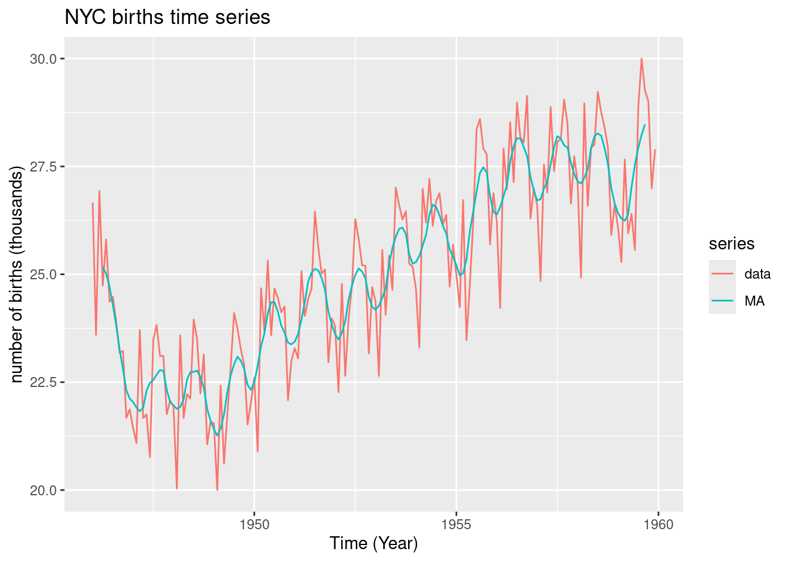
Exercise: Change the moving average window and see if you can make seasonality (periodicity) vanish!
An even order of periodicity requires an asymmetric averaging window, so to create an symmetric average, one can repeat the moving average of order two on the already-averaged data.
17.3.2 Classic decomposition:
Additive decomposition [1]:
- If m is an even number, compute the trend-cycle component \(T_t\) using a 2×m-MA. If m is an odd number, compute the trend-cycle component \(\hat T_t\) using an m-MA.
- Calculate the detrended series: \(X_t - \hat T_t\)
- To estimate the seasonal component for each season, average the detrended values for that season. For example, with monthly data, the seasonal component for March is the average of all the detrended March values in the data. These seasonal component values are then adjusted to ensure that they add to zero. The seasonal component is obtained by stringing together these monthly values, and then replicating the sequence for each year of data. This gives \(\hat S_t\).
- The remainder component is calculated by subtracting the estimated seasonal and trend-cycle components: \(\hat R_t = X_t - \hat T_t - \hat S_t\)
birthstimeseries %>% decompose(type="additive") %>%
autoplot() + xlab("Year") +
ggtitle("Classic additive decomposition
of the NYC births time series")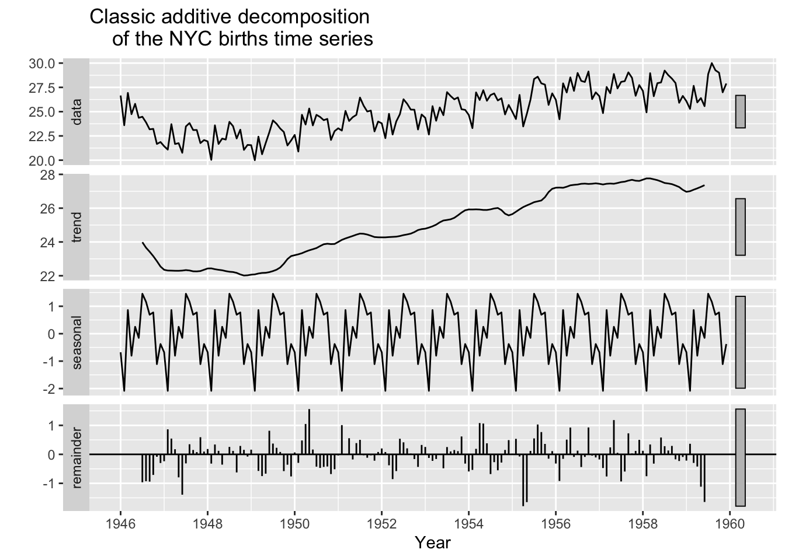
This simple classical decomposition has numerous flaws, so better, more modern methods are preferred. In particular, it assumes a constant seasonal term, it tends to over-estimate the variation in the trend, it misses data for the first few and last few data points, and can be sensitive to outliers.
17.3.3 STL decomposition
A more robust method is called the STL decomposition (Seasonal and Trend decomposition using Loess). To summarize its advantages [1]:
- STL can handle any type of seasonality, not only monthly and quarterly data.
- The seasonal component is allowed to change over time, and the rate of change can be controlled by the user.
- The smoothness of the trend-cycle can also be controlled by the user.
- It can be robust to outliers (i.e., the user can specify a robust decomposition), so that occasional unusual observations will not affect the estimates of the trend-cycle and seasonal components. They will, however, affect the remainder component.
birthstimeseries %>% stl(t.window=13, s.window="periodic", robust=TRUE) %>%
autoplot()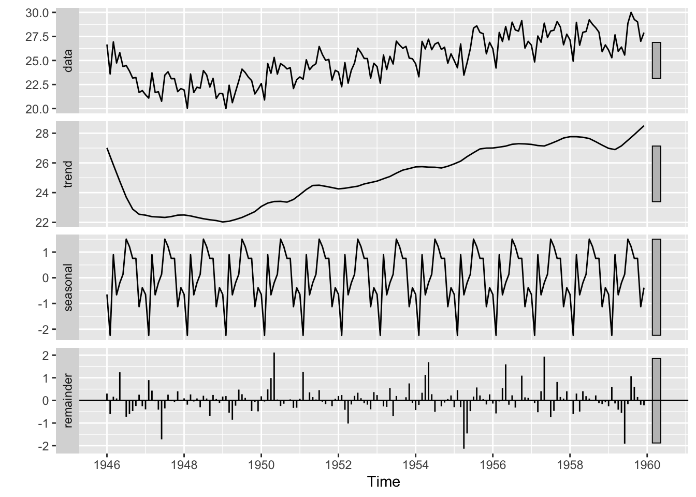
Exercise: Apply the two decomposition methods to the pelt time series data.
17.4 Relationships within and between time series
17.4.1 Visualizing correlation between different variables
The following data set contains the number of visitors (visitor nights) on a quarterly basis for five regions of New South Wales, Australia:
autoplot(visnights[,1:5]) +
ylab("Number of visitor nights each quarter (millions)")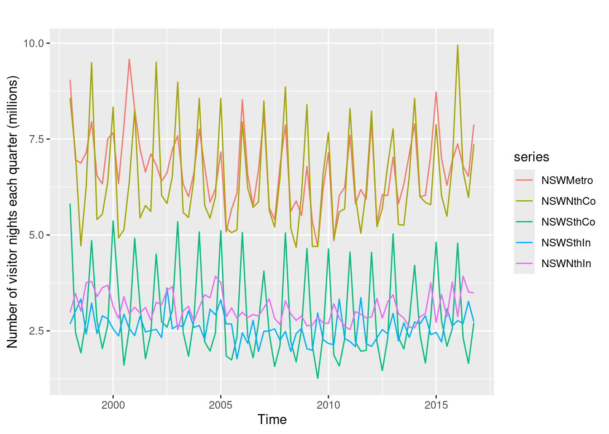
One simple question is whether different variables are related to each other. One simple way is to calculate the Pearson correlation between different time series, called the cross-correlation (where \(\bar X\) stands for the mean of X and \(\text{Var}(X)\) stands for the variance of \(X\)):
\[ \text{Cor}(X,Y) = \frac{\sum_t (\bar X - X_t)(\bar Y - Y_t)}{\sqrt{\text{Var}(X)\text{Var}(Y)}} \]
In a data set with multiple variables it can be handy to examine the cross-correlations between all pairs between them. Here’s a convenient function to both calculate and visualize it for multiple variables, in this case the hotel visitor nights for the 5 different regions of NSW. The plot below show the scatter plots of all the pairs of time series against each other, along with the respective correlation coefficients:
head(visnights) NSWMetro NSWNthCo NSWSthCo NSWSthIn NSWNthIn QLDMetro QLDCntrl
1998 Q1 9.047095 8.565678 5.818029 2.679538 2.977507 12.106052 2.748374
1998 Q2 6.962126 7.124468 2.466437 3.010732 3.477703 7.786687 4.040915
1998 Q3 6.871963 4.716893 1.928053 3.328869 3.014770 11.380024 5.343964
1998 Q4 7.147293 6.269299 2.797556 2.417772 3.757972 9.311460 4.260419
1999 Q1 7.956923 9.493901 4.853681 3.224285 3.790760 12.671942 4.186113
1999 Q2 6.542243 5.401201 2.759843 2.428489 3.395284 9.582965 4.237806
QLDNthCo SAUMetro SAUCoast SAUInner VICMetro VICWstCo VICEstCo
1998 Q1 2.137234 2.881372 2.591997 0.8948773 7.490382 2.4420048 3.381972
1998 Q2 2.269596 2.124736 1.375780 0.9792509 5.198178 0.9605047 1.827940
1998 Q3 4.890227 2.284870 1.079542 0.9803289 5.244217 0.7559744 1.351952
1998 Q4 2.621548 1.785889 1.497664 1.5094343 6.274246 1.2716040 1.493415
1999 Q1 2.483203 2.293873 2.247684 0.9635227 9.187422 2.3850583 2.896929
1999 Q2 3.377830 2.197418 1.672802 0.9968803 4.992303 1.3288638 1.547901
VICInner WAUMetro WAUCoast WAUInner OTHMetro OTHNoMet
1998 Q1 5.326655 3.075779 3.066555 0.6949954 3.437924 2.073469
1998 Q2 4.441119 2.154929 3.334405 0.5576796 2.677081 1.787939
1998 Q3 3.815645 2.787286 4.365844 1.0061844 3.793743 2.345021
1998 Q4 3.859567 2.752910 4.521996 1.1725514 3.304231 1.943689
1999 Q1 4.588755 3.519564 3.579347 0.3981829 3.510819 2.165838
1999 Q2 4.070401 3.160430 3.408533 0.5960182 2.871867 1.803940GGally::ggpairs(as.data.frame(visnights[,1:5]))Registered S3 method overwritten by 'GGally':
method from
+.gg ggplot2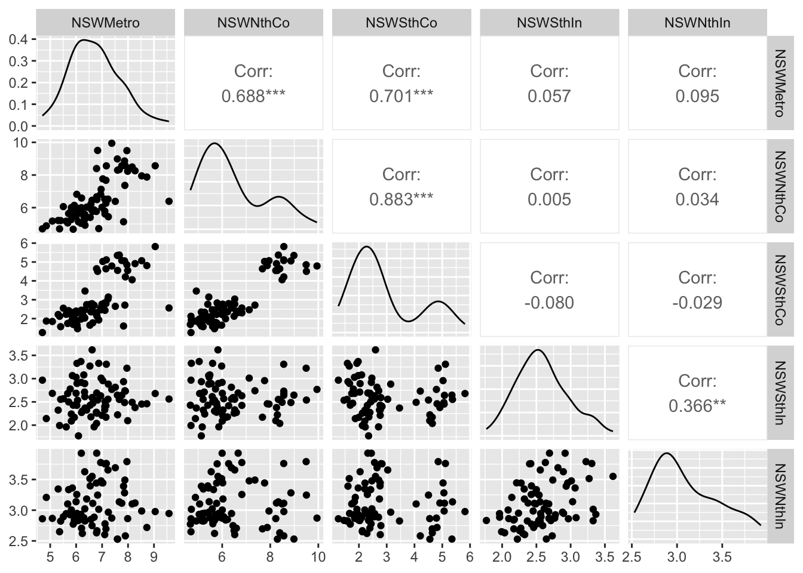
However, sometimes the straightforward correlation may miss or underestimate a relationship that is obviously there, but with a delay. Here is the Lynx and Hare variables from the pelts data set correlated with each other:
head(pelt)# A tsibble: 6 x 3 [1Y]
Year Hare Lynx
<dbl> <dbl> <dbl>
1 1845 19580 30090
2 1846 19600 45150
3 1847 19610 49150
4 1848 11990 39520
5 1849 28040 21230
6 1850 58000 8420GGally::ggpairs(pelt[,2:3])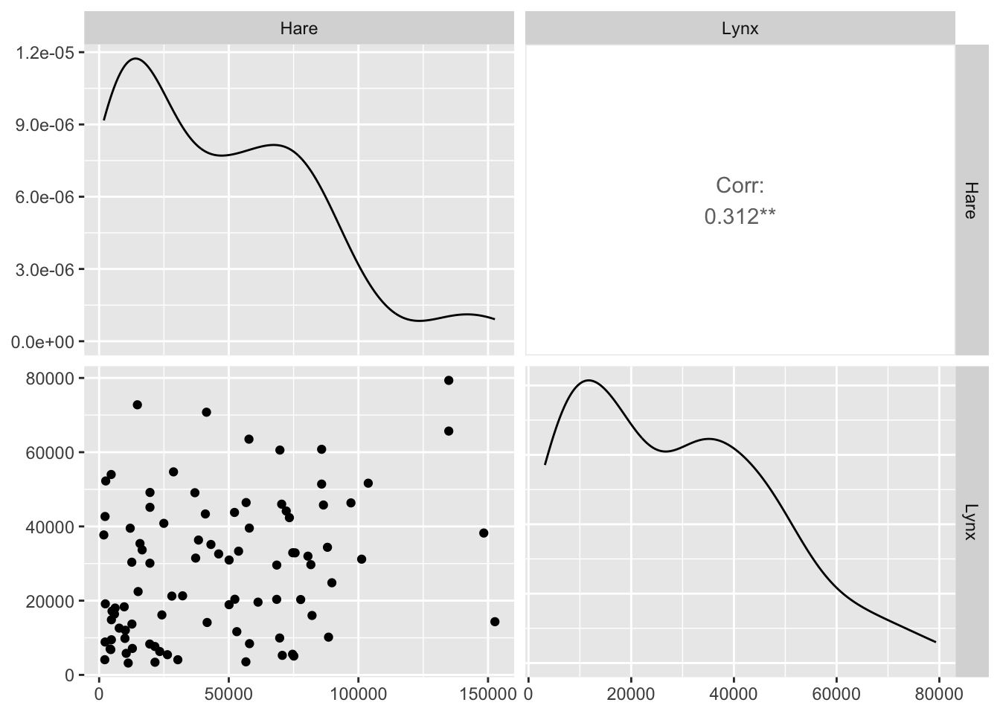
The correlation coefficient is about 0.3, but it appears that the relationship should be stronger than that from the plots. The function CCF from feasts package calculates correlations for a pair of variables that are shifted against each other (lagged) and here is the resulting plot:
pelt %>%
CCF(Lynx, Hare, lag_max = 8) %>%
autoplot()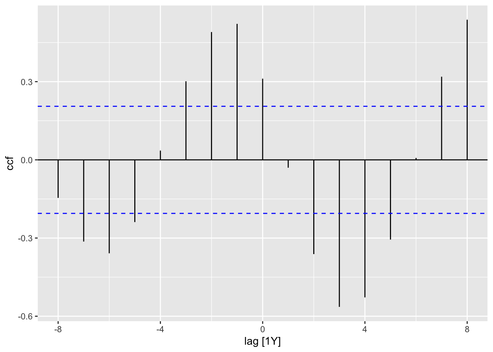
You can see the non-shifted correlation of about 0.3 at lag of 0, but the correlation is about 2 times higher when the series is shifted by 1 or 2 years, as suggested by the time plots of the series.
17.4.2 Autocorrelation
Just as we saw for cross-correlations, a time series can be correlated against itself shifted in time by some set amount, also called lagged. We can plot the lagged correlations for different visitor
visnights[,1] Qtr1 Qtr2 Qtr3 Qtr4
1998 9.047095 6.962126 6.871963 7.147293
1999 7.956923 6.542243 6.330364 7.509212
2000 7.662491 6.341802 7.827301 9.579562
2001 8.270488 7.240427 6.640490 7.111875
2002 6.827826 6.404992 6.615760 7.226376
2003 7.589058 6.334527 5.996748 6.612846
2004 7.758267 6.778836 5.854452 6.200214
2005 7.163830 5.082204 5.673551 6.089906
2006 8.525916 6.569684 5.771059 6.692897
2007 8.158658 5.710082 5.402543 6.803494
2008 7.866269 5.616704 5.886764 5.506298
2009 6.787225 5.361317 4.699350 6.208784
2010 7.148262 4.850217 6.029490 6.238903
2011 7.597468 5.815930 6.183239 5.929030
2012 7.986931 5.307871 6.054112 6.023897
2013 7.028480 5.813450 6.322841 7.101691
2014 7.897316 5.997468 6.033533 7.103398
2015 8.725132 6.995875 6.294490 6.945476
2016 7.373757 6.792234 6.530568 7.878277visnights_smaller <- window(visnights[,2], start=2000, end = 2010)
gglagplot(visnights_smaller) 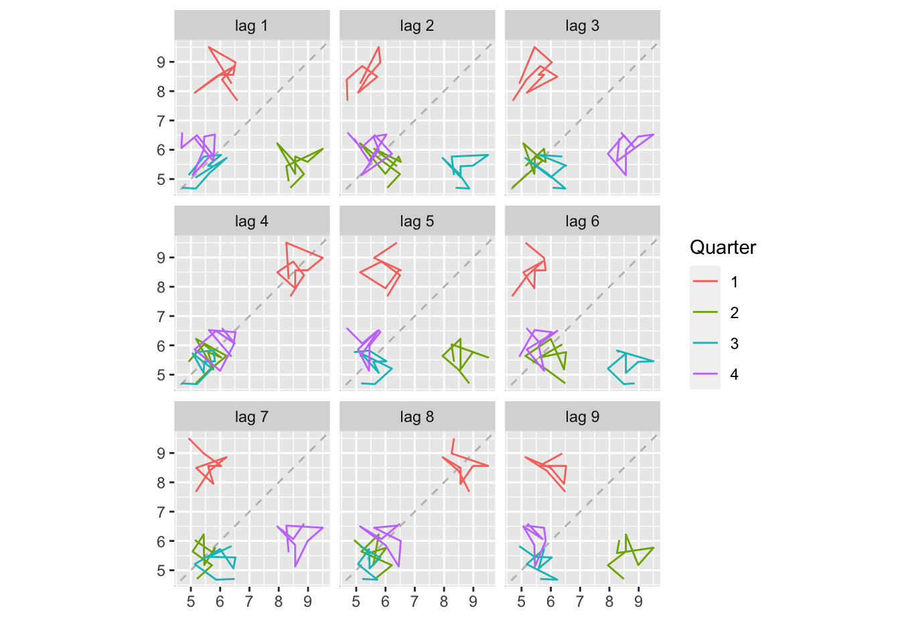
Here the colors indicate the quarter of the variable on the vertical axis, compared with the shifted (lagged variable on the horizontal axis, and the lines connect points in chronological order. The relationship is strongly positive at lags 4 and 8, reflecting the strong seasonality in the data.
This suggests that there is a strong similarity between the time series and itself, shifted by certain time values. This is described by the autocorrelation, which is defined as a function of the lag \(k\):
\[ r(k) = \frac{\sum_{t=k}^T (\bar X - X_t)(\bar X - X_{t-k})}{\text{Var}(X)} \]
The autocorrelation can be calculated and plotted for our example of the visitation nights in New South Wales:
ggAcf(visnights_smaller)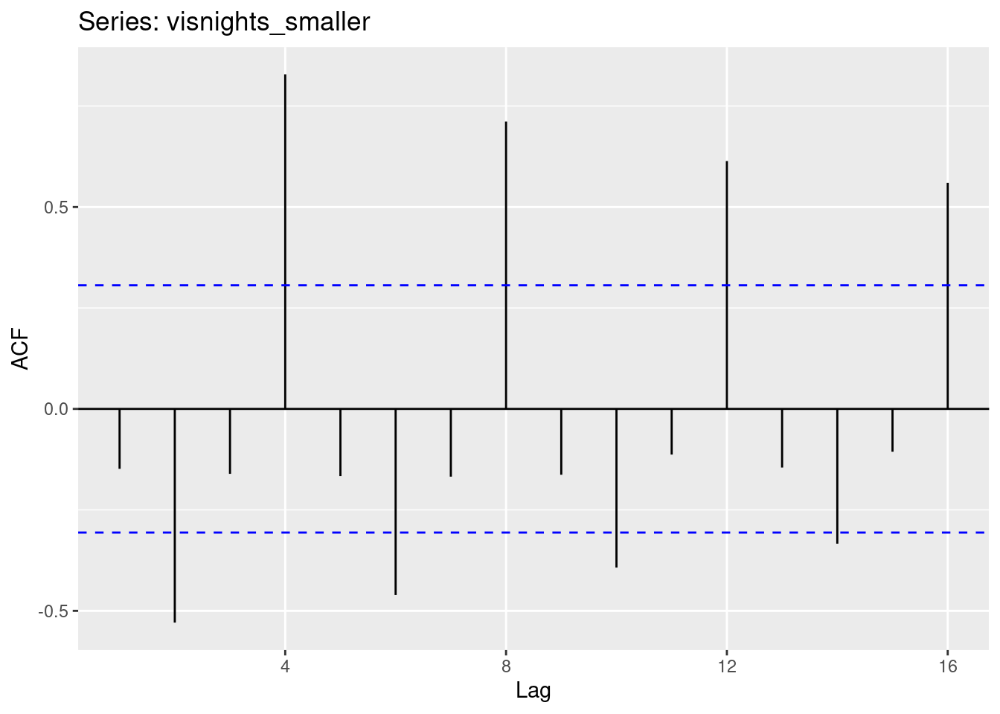
gglagplot(pelt$Lynx, lags =12) + ggtitle("Lag plots for the Lynx pelt data")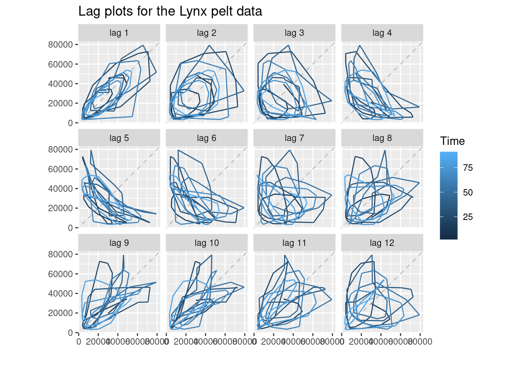
gglagplot(pelt$Hare, lags = 12) + ggtitle("Lag plots for the Hare pelt data")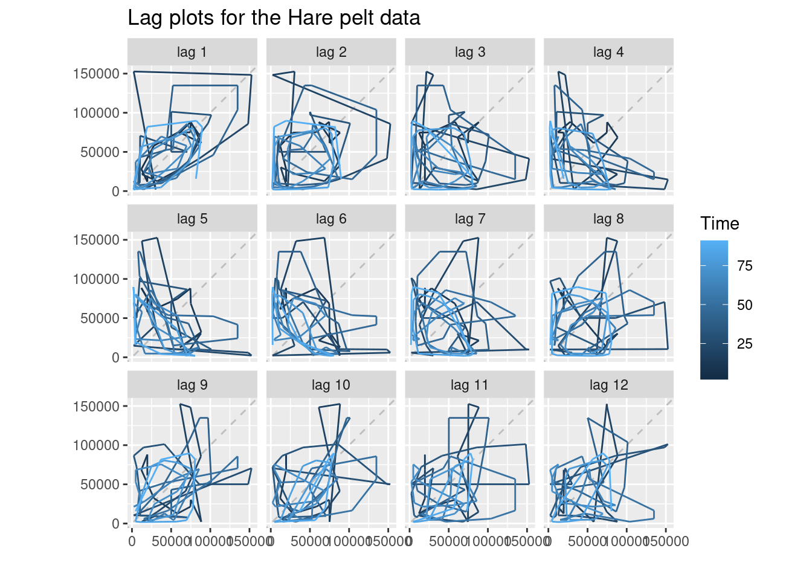
In both cases, the lag plots are closest to the diagonal identity line for lag of 9 or 10. This should be reflected in the autocorrelation plot:
ggAcf(pelt$Lynx) + ggtitle("Autocorrelation for the Lynx pelt data")
ggAcf(pelt$Hare) + ggtitle("Autocorrelation for the Hare pelt data")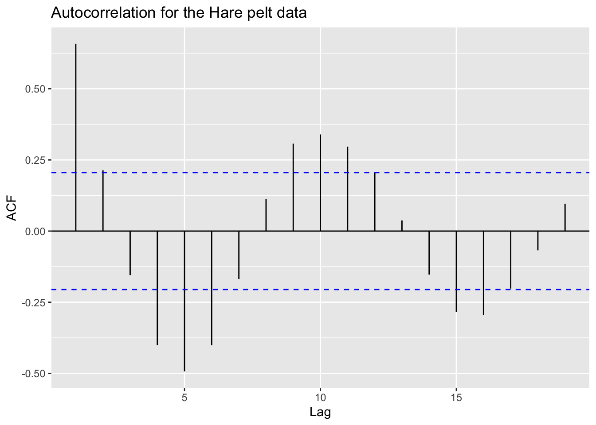
Notice the periodicity in the autocorrelation, which indicated periodicity in the time series.
Autocorrelation measures the memory of a signal - for example, pure white noise is uncorrelated with itself even a moment later, and thus has no memory. As such, it is very useful as a measure of a trend in the data - if the time series has slowly decaying, positive autocorrelation, that indicates a pronounced trend, while periodicity indicates seasonality in the data.
Exercise: Use the lag and autocorrelation analysis to describe the patterns in the time series of births in NYC.
17.4.3 Perennial warning: correlations are not causation!
These two data sets, on Australian air passengers and rice production in Guinea, have a very strong positive correlation:
aussies <- window(ausair, end=2011)
fit <- tslm(aussies ~ guinearice)
summary(fit)
Call:
tslm(formula = aussies ~ guinearice)
Residuals:
Min 1Q Median 3Q Max
-5.9448 -1.8917 -0.3272 1.8620 10.4210
Coefficients:
Estimate Std. Error t value Pr(>|t|)
(Intercept) -7.493 1.203 -6.229 2.25e-07 ***
guinearice 40.288 1.337 30.135 < 2e-16 ***
---
Signif. codes: 0 '***' 0.001 '**' 0.01 '*' 0.05 '.' 0.1 ' ' 1
Residual standard error: 3.239 on 40 degrees of freedom
Multiple R-squared: 0.9578, Adjusted R-squared: 0.9568
F-statistic: 908.1 on 1 and 40 DF, p-value: < 2.2e-16However, notice that the residuals indicate a strong trend, which violates the assumptions of linear regression.
checkresiduals(fit)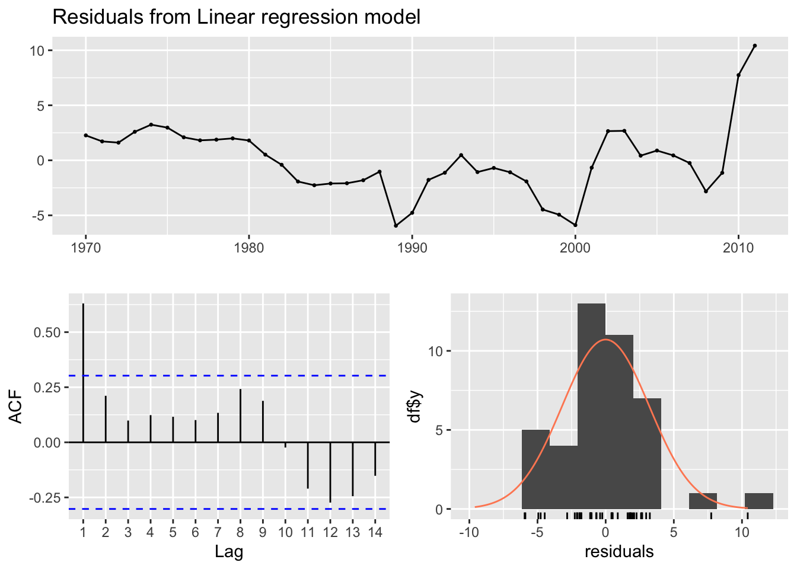
Breusch-Godfrey test for serial correlation of order up to 8
data: Residuals from Linear regression model
LM test = 28.813, df = 8, p-value = 0.000342There are a number of fun examples of spurious time series correlations in reference [5].
17.5 Modeling and forecasting
17.5.1 Forecasting using smoothing methods
The package fable is part of the tidyverts bundle and can be used to easily produce forecasts using several standard methods, such as ASNAIVE (Seasonal Naive), ETS (exponential smoothing), and ARIMA (AutoRegressive Integrated Moving Average). The code below compares all three forecast models for the births in NYC data:
as_tsibble(birthstimeseries) %>%
model(
ets = ETS(box_cox(birthstimeseries, 0.3)),
arima = ARIMA(log(birthstimeseries)),
snaive = SNAIVE(birthstimeseries)
) %>%
forecast(h = "2 years") %>%
autoplot(birthstimeseries)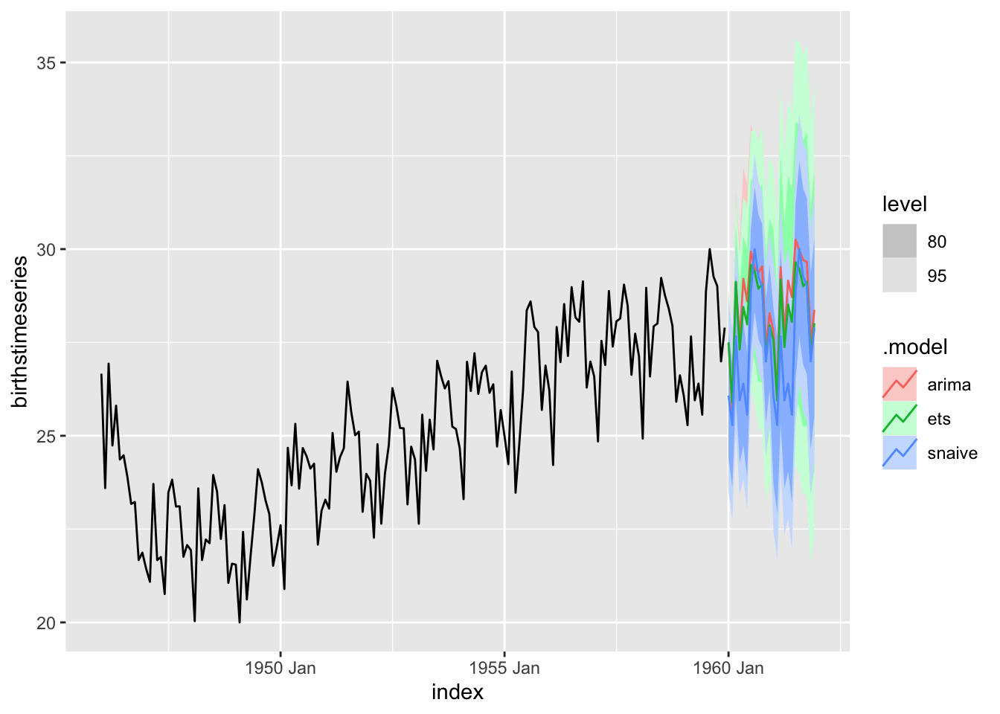
17.6 References and further reading:
- Rob J Hyndman and George Athanasopoulos. Forecasting: Principles and Practice
- Jonathan Cryer and Kung-Sik Chan Time Series Analysis with Applications in R
- Cross-validation in forecasting
- Time series nested cross-validation
- Spurious correlations